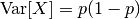
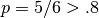

1.13. 特征选择(Feature selection)¶
sklearn.feature_selection模块中的类能够用于数据集的特征选择/降维，以此来提高预测模型的准确率或改善它们在高维数据集上的表现。
1.13.1. 移除低方差的特征(Removing features with low variance)¶
VarianceThreshold 是特征选择中的一项基本方法。它会移除所有方差不满足阈值的特征。默认设置下，它将移除所有方差为0的特征，即那些在所有样本中数值完全相同的特征。
假设我们有一个带有布尔特征的数据集，我们要移除那些超过80%的数据都为1或0的特征。布尔特征是伯努利随机变量，该类变量的方差为：

我们可以使用阈值 .8 * (1 - .8):
>>> from sklearn.feature_selection import VarianceThreshold
>>> X = [[0, 0, 1], [0, 1, 0], [1, 0, 0], [0, 1, 1], [0, 1, 0], [0, 1, 1]]
>>> sel = VarianceThreshold(threshold=(.8 * (1 - .8)))
>>> sel.fit_transform(X)
array([[0, 1],
[1, 0],
[0, 0],
[1, 1],
[1, 0],
[1, 1]])
果然, VarianceThreshold 移除了第一列特征，第一列中特征值为0的概率达到了  。
1.13.2. 单变量特征选择(Univariate feature selection)¶
单变量特征选择基于单变量的统计测试来选择最佳特征。它可以看作预测模型的一项预处理。Scikit-learn将特征选择程序用包含 transform 函数的对象来展现：
SelectKBest移除得分前名以外的所有特征
SelectPercentile移除得分在用户指定百分比以后的特征- 对每个特征使用通用的单变量统计测试： 假正率(false positive rate)
SelectFpr, 伪发现率(false discovery rate)SelectFdr, 或族系误差率SelectFwe.GenericUnivariateSelect可以设置不同的策略来进行单变量特征选择。同时不同的选择策略也能够使用超参数寻优，从而让我们找到最佳的单变量特征选择策略。
比如，我们可以对样本进行一次 :math:`chi^2 测试来选择最佳的两项特征：
>>> from sklearn.datasets import load_iris
>>> from sklearn.feature_selection import SelectKBest
>>> from sklearn.feature_selection import chi2
>>> iris = load_iris()
>>> X, y = iris.data, iris.target
>>> X.shape
(150, 4)
>>> X_new = SelectKBest(chi2, k=2).fit_transform(X, y)
>>> X_new.shape
(150, 2)
这些作为打分函数输入的对象，返回单变量的概率值：
- 用于回归:
f_regression- 用于分类:
chi2orf_classif
稀疏数据的特征选择
如果你使用稀疏数据 (比如，使用稀疏矩阵表示的数据),
只有 chi2 能在处理数据时保持其稀疏性.
1.13.3. 递归特征消除(Recursive feature elimination)¶
对于一个为数据特征指定权重的预测模型（例如，线性模型对应参数coefficients），递归特征消除 (RFE)通过递归减少考察的特征集规模来选择特征。首先，预测模型在原始特征上训练，每项特征指定一个权重。之后，那些拥有最小绝对值权重的特征被踢出特征集。如此往复递归，直至剩余的特征数量达到所需的特征数量。
RFECV 通过交叉验证的方式执行RFE，以此来选择最佳数量的特征。
示例:
- Recursive feature elimination: 一个递归特征消除的示例，展示了在数字分类任务中，像素之间的相关性。
- Recursive feature elimination with cross-validation: 一个递归特征消除示例，通过交叉验证的方式自动调整所选特征的数量。
1.13.4. 使用SelectFromModel选择特征(Feature selection using SelectFromModel)¶
SelectFromModel 作为meta-transformer，能够用于拟合后任何拥有``coef_`` 或``feature_importances_`` 属性的预测模型。
如果特征对应的``coef_`` 或 feature_importances_ 值低于设定的阈值``threshold``，那么这些特征将被移除。除了手动设置阈值，也可通过字符串参数调用内置的启发式算法(heuristics)来设置阈值，包括：平均值(“mean”), 中位数(“median”)以及他们与浮点数的乘积，如”0.1*mean”。
关于SelectFromModel使用的示例见下节。
Examples
- Feature selection using SelectFromModel and LassoCV: 在阈值未知的前提下，选择了Boston dataset中两项最重要的特征。
1.13.4.1. 基于L1的特征选择(L1-based feature selection)¶
使用L1范数作为惩罚项的:ref:Linear models <linear_model> 会得到稀疏解：大部分特征对应的系数为0。当你希望减少特征的维度以用于其它分类器时，可以通过 feature_selection.SelectFromModel 来选择不为0的系数。特别指出，常用于此目的的稀疏预测模型有 linear_model.Lasso （回归）， linear_model.LogisticRegression 和 svm.LinearSVC （分类）:
>>> from sklearn.svm import LinearSVC
>>> from sklearn.datasets import load_iris
>>> from sklearn.feature_selection import SelectFromModel
>>> iris = load_iris()
>>> X, y = iris.data, iris.target
>>> X.shape
(150, 4)
>>> lsvc = LinearSVC(C=0.01, penalty="l1", dual=False).fit(X, y)
>>> model = SelectFromModel(lsvc, prefit=True)
>>> X_new = model.transform(X)
>>> X_new.shape
(150, 3)
对于SVM和逻辑回归，参数C控制稀疏性：C越小，被选中的特征越少。对于Lasso，参数alpha越大，被选中的特征越少 。
示例:
- Classification of text documents using sparse features: 不同算法使用基于L1的特征选择进行文档分类的对比。
L1恢复和压缩感知(L1-recovery and compressive sensing)
对于一个好的alpha值，在满足特定条件下， Lasso 仅使用少量观测值就能够完全恢复出非零的系数。特别地，样本的数量需要“足够大”，否则L1模型的表现会充满随机性，所谓“足够大”取决于非零系数的数量，特征数量的对数，噪声的数量，非零系数的最小绝对值以及设计矩阵X的结构。此外，设计矩阵必须拥有特定的属性，比如不能太过相关(correlated)。
对于非零系数的恢复，还没有一个选择alpha值的通用规则 。alpha值可以通过交叉验证来设置(LassoCV or LassoLarsCV)，尽管这也许会导致模型欠惩罚(under-penalized)：引入少量非相关变量不会影响分数预测。相反BIC (LassoLarsIC) 更倾向于设置较大的alpha值。
Reference Richard G. Baraniuk “Compressive Sensing”, IEEE Signal Processing Magazine [120] July 2007 http://dsp.rice.edu/files/cs/baraniukCSlecture07.pdf
1.13.4.2. 随机稀疏模型(Randomized sparse models)¶
基于L1的稀疏模型的局限在于，当面对一组互相关的特征时，它们只会选择其中一项特征。为了减轻该问题的影响可以使用随机化技术，通过多次重新估计稀疏模型来扰乱设计矩阵，或通过多次下采样数据来统计一个给定的回归量被选中的次数。
RandomizedLasso 实现了使用这项策略的Lasso， RandomizedLogisticRegression 使用逻辑回归，适用于分类任务。要得到整个迭代过程的稳定分数，你可以使用 lasso_stability_path。
注意到对于非零特征的检测，要使随机稀疏模型比标准F统计量更有效， 那么模型的参考标准需要是稀疏的，换句话说，非零特征应当只占一小部分。
示例:
- Sparse recovery: feature selection for sparse linear models: 比较了不同的特征选择方法，并讨论了它们各自适用的场合。
参考文献:
- N. Meinshausen, P. Buhlmann, “Stability selection”, Journal of the Royal Statistical Society, 72 (2010) http://arxiv.org/pdf/0809.2932
- F. Bach, “Model-Consistent Sparse Estimation through the Bootstrap” http://hal.inria.fr/hal-00354771/
1.13.4.3. 基于树的特征选择(Tree-based feature selection)¶
基于树的预测模型（见 sklearn.tree 模块，森林见 sklearn.ensemble 模块）能够用来计算特征的重要程度，因此能用来去除不相关的特征（结合 sklearn.feature_selection.SelectFromModel
）:
>>> from sklearn.ensemble import ExtraTreesClassifier
>>> from sklearn.datasets import load_iris
>>> from sklearn.feature_selection import SelectFromModel
>>> iris = load_iris()
>>> X, y = iris.data, iris.target
>>> X.shape
(150, 4)
>>> clf = ExtraTreesClassifier()
>>> clf = clf.fit(X, y)
>>> clf.feature_importances_
array([ 0.04..., 0.05..., 0.4..., 0.4...])
>>> model = SelectFromModel(clf, prefit=True)
>>> X_new = model.transform(X)
>>> X_new.shape
(150, 2)
示例:
- Feature importances with forests of trees: 从模拟数据中恢复有意义的特征。
- Pixel importances with a parallel forest of trees: 用于人脸识别数据的示例。
1.13.5. 特征选择融入pipeline(Feature selection as part of a pipeline)¶
- 特征选择常常被当作学习之前的一项预处理。在scikit-learn中推荐使用
-
clf = Pipeline([ ('feature_selection', SelectFromModel(LinearSVC(penalty="l1"))), ('classification', RandomForestClassifier()) ]) clf.fit(X, y)
在此代码片段中，我们将 sklearn.svm.LinearSVC 和 sklearn.feature_selection.SelectFromModel 结合来评估特征的重要性，并选择最相关的特征。之后 sklearn.ensemble.RandomForestClassifier 模型使用转换后的输出训练，即只使用被选出的相关特征。你可以选择其它特征选择方法，或是其它提供特征重要性评估的分类器。更多详情见 sklearn.pipeline.Pipeline 相关示例。